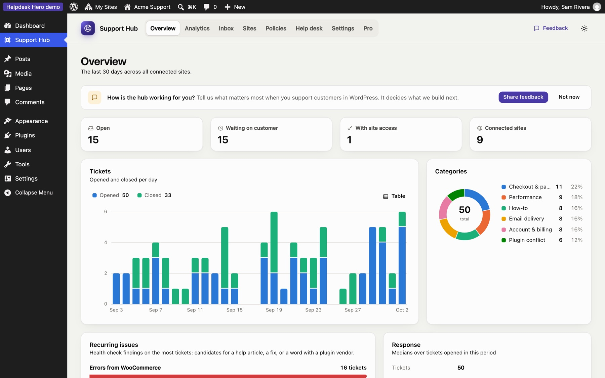

Overview and statistics
The Overview is the hub's home page: what needs you now, and how support went over the last 30 days.

What it shows#
- Open, Waiting on customer, With site access and Connected sites right now.
- Tickets: opened and closed per day. Hover a day for the numbers, or click Table for an accessible table view.
- Categories: the share of tickets in each category from your policy.
- Recurring issues: health check findings that appear on the most tickets, such as "Errors from WooCommerce" or "More than one page caching plugin is active". These are good candidates for a help article, a fix in your product, or a word with a plugin vendor.
- Response: median time to the first reply and to close.
Advanced analytics (Pro)#
Pro adds an Analytics page with any date range (7 days to a year), filtering by site, and more charts:

- tickets over time, per day or per week
- categories, priorities, and how tickets arrived (dashboard or emailed)
- recurring issues and tags
- busiest sites
- customer ratings: average, distribution and recent comments
Export PDF creates a clean report of the current view, ready to send to a client (for example a monthly report for a care plan customer). The report is made by your browser's print dialog, so nothing is uploaded anywhere.
Still stuck? Check Troubleshooting and the FAQ, or ask on GitHub. You can also try everything in the live demo.